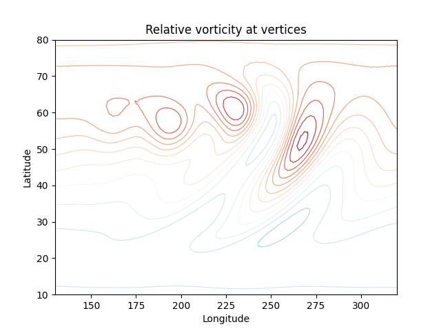
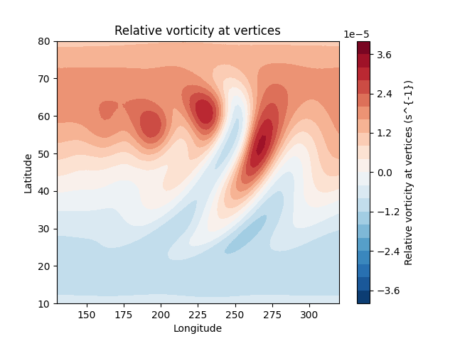
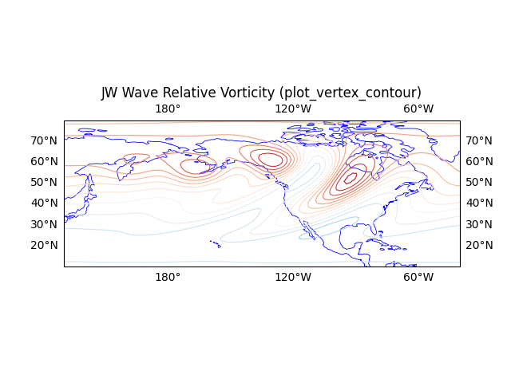
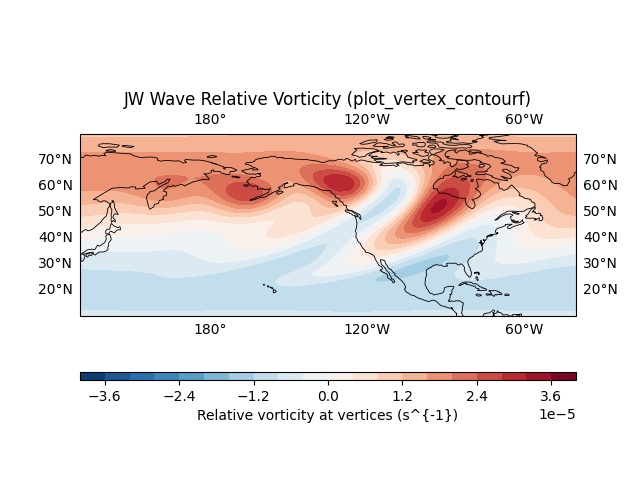

Note
Go to the end to download the full example code.
MPAS Vertex-centered contour plots¶
This example demonstrates contour plots for MPAS vertex-centered scalar data.
easyclimate.plot.mpas.plot_vertex_contour
draws line contours and
easyclimate.plot.mpas.plot_vertex_contourf
draws filled contours. The sample vorticity field is selected at one time
and vertical level before plotting.
import xarray as xr
import numpy as np
import cartopy.crs as ccrs
import matplotlib.pyplot as plt
import easyclimate as ecl
from easyclimate.plot.mpas import plot_vertex_contour, plot_vertex_contourf
Open the MPAS output dataset. The selected vorticity field is used in each contour example below.
data = ecl.open_tutorial_dataset("mpas_JWwave_T10_nVertLevels10")
data
Draw vertex-based contour lines over a broad regional domain.
plot_vertex_contour(
data,
data.vorticity,
lon_min=130,
lon_max=320,
lat_min=10,
lat_max=80,
levels = np.linspace(-4e-5, 4e-5, 21)
)

<matplotlib.tri._tricontour.TriContourSet object at 0x7f1a5f64b610>
Filled vertex contours use the same region selection arguments.
plot_vertex_contourf(
data,
data.vorticity,
lon_min=130,
lon_max=320,
lat_min=10,
lat_max=80,
levels = np.linspace(-4e-5, 4e-5, 21),
)

<matplotlib.tri._tricontour.TriContourSet object at 0x7f1a5f8668d0>
Add the contour output to a Cartopy axes when map decorations are needed.
fig, ax = plt.subplots(subplot_kw= {"projection": ccrs.PlateCarree(-120)})
plot_vertex_contour(
data,
data.vorticity,
levels = np.linspace(-4e-5, 4e-5, 21),
ax = ax,
transform = ccrs.PlateCarree(),
lon_min=130,
lon_max=320,
lat_min=10,
lat_max=80,
)
ax.set_title("JW Wave Relative Vorticity (plot_vertex_contour)")
ax.coastlines(resolution="110m", linewidth=0.6, color = "b")
ax.gridlines(draw_labels=True, alpha = 0)

<cartopy.mpl.gridliner.Gridliner object at 0x7f1a5f761350>
The filled contour variant can also add a horizontal colorbar through
cbar_kwargs.
fig, ax = plt.subplots(subplot_kw= {"projection": ccrs.PlateCarree(-120)})
plot_vertex_contourf(
data,
data.vorticity,
levels = np.linspace(-4e-5, 4e-5, 21),
ax = ax,
transform = ccrs.PlateCarree(),
lon_min=130,
lon_max=320,
lat_min=10,
lat_max=80,
cbar_kwargs = {'location': 'bottom', 'aspect': 60}
)
ax.set_title("JW Wave Relative Vorticity (plot_vertex_contourf)")
ax.coastlines(resolution="110m", linewidth=0.6, color = "k")
ax.gridlines(draw_labels=True, alpha = 0)

<cartopy.mpl.gridliner.Gridliner object at 0x7f1a5faeefd0>
Total running time of the script: (0 minutes 3.380 seconds)